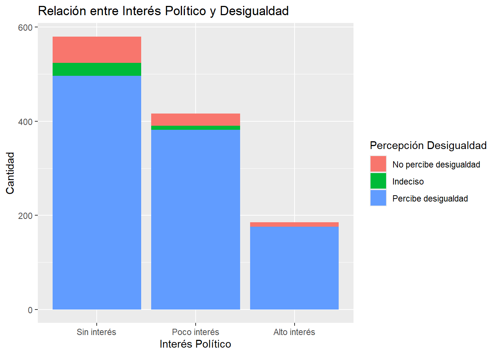
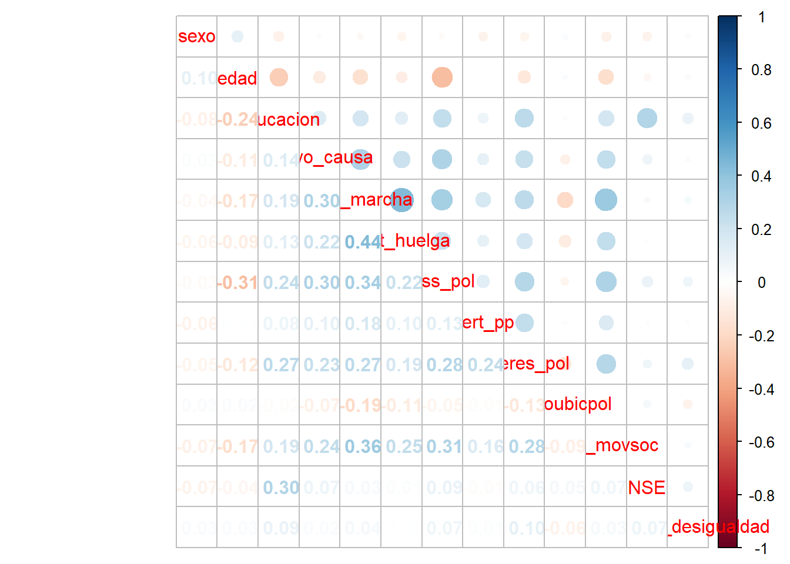

##Ajustes Iniciales
rm(list=ls())
options(scipen=999)Desigualdad y Participación Política
“Tendencias de Desigualdad y Participación Política: Estudiantes Universitarios en Chile”
En el Chile actual, la desigualdad social y la estratificación económica han emergido como temas de alta relevancia sociológica, planteando desafíos significativos para la cohesión social y la justicia distributiva en las sociedades contemporáneas. La percepción de la desigualdad juega un papel crucial en la configuración de actitudes y comportamientos sociales y políticos de los individuos, y su impacto se refleja de manera notable en la participación política de la población.
La educación cívica y la política educativa se presentan como herramientas fundamentales para abordar esta problemática, ya que contribuyen a la formación de ciudadanos informados y comprometidos con el bienestar colectivo. En este contexto, comprender la relación entre la percepción de la desigualdad, la educación cívica y la participación política de estudiantes universitarios adquiere una relevancia particular, ya que estos jóvenes representan una parte importante de la población activa en la esfera política.
En este estudio, se propone analizar cómo la percepción de la desigualdad social influye en la participación política de los estudiantes universitarios en Chile. Diversas investigaciones indican que la participación política está estrechamente relacionada con el estatus socioeconómico, siendo aquellos con un nivel socioeconómico más alto más propensos a involucrarse en el sistema político.(Castillo et al. 2014) La desigualdad social en Chile ha sido un tema recurrente que ha generado tensiones y debates en la sociedad, contribuyendo a la fragmentación social y a la percepción de injusticia entre diferentes estratos de la población. Esta disparidad socioeconómica no solo ha impactado en la calidad de vida de los ciudadanos, sino también en su participación política y en la legitimidad de las instituciones democráticas.
Además, en la literatura existe una creciente preocupación por las menores tasas de participación electoral entre las cohortes de edad más joven. Por ejemplo, un estudio (Marc Hooghe et al. 2013) investigó la disposición a votar entre adolescentes de 14 años de 22 países europeos y encontró que, si bien la disposición a votar sigue siendo elevada en este grupo de edad, existe una clara división de género. Las niñas son más propensas a afirmar que votarán, mientras que los niños se ven más a sí mismos como futuros candidatos electorales. Un clima de aula abierta en la escuela contribuye a la voluntad de votar en futuras elecciones. Sin embargo, elementos que impactan en la participación de adultos no tienen un efecto significativo en la intención de votar entre adolescentes, lo que sugiere que la menor tasa de participación observada entre los más jóvenes no puede atribuirse simplemente a una falta de motivación política, sino que deben considerarse otros elementos para explicar esta tendencia a la baja.
“La evidencia empírica ha demostrado consistentemente que la participación política está relacionada positivamente con el entorno socioeconómico. Además, investigaciones recientes sugieren que los niños que provienen de familias de bajo estatus ya están menos dispuestos a involucrarse políticamente.” (Juan Carlos Castillo et al. 2015)
Ligado a lo anterior, las influencias positivas de condiciones socioeconómicas más favorables representan un aumento del 36% en los puntajes de las pruebas escolares. Estos hallazgos sugieren que en el sistema educativo chileno, caracterizado por su segregación socioeconómica, estos efectos podrían contribuir a ampliar la brecha en el rendimiento académico en el ámbito de la educación cívica entre los estudiantes de escuelas con mayores recursos y aquellos con menos recursos. Además, este estudio revela que, en promedio, los estudiantes con un estatus socioeconómico más elevado son más susceptibles a estas influencias, y que los efectos de la composición socioeconómica son más pronunciados en el sector privado subvencionado que en el sector público. (Diego Collado et al. 2015)
En ese sentido, la hipótesis central que orientará esta investigación es que a medida que aumenta el nivel de percepción de la desigualdad social entre los estudiantes universitarios, también aumenta su participación política. Se espera que la percepción de la desigualdad social actúe como un predictor principal de la participación política de estos jóvenes, motivándolos a comprometerse activamente en la esfera política para abogar por cambios sociales y económicos.
Para efectos de este trabajo, utilizaré datos obtenidos a través del Estudio Longuitudinal de Chile (ELSOC_ola2016), con el fin de observar como se comporta la participación política de los universitarios en Chile. Para ello, se considerarán aquellas personas que cursen una institución de educación superior, en un rango etario de 18 a 35 años.
Trabajo en R
Ajustes Iniciales
Cargar Paquetes
pacman::p_load(sjlabelled,
dplyr, #Manipulacion de datos
stargazer, #Tablas
sjmisc, # Tablas
summarytools, # Tablas
kableExtra, #Tablas
sjPlot, #Tablas y gráficos
corrplot, # Correlaciones
sessioninfo, # Información de la sesión de trabajo
ggplot2,# Para la mayoría de los gráficos
GGally)Cargar Base de Datos
load("Input/data original/ELSOC_W01_v4.01_R.RData")
View(elsoc_2016)
names(elsoc_2016) [1] "idencuesta" "ola" "version" "muestra"
[5] "cuestion_mig" "t01" "t02_01" "t02_02"
[9] "t02_03" "t02_04" "t03_01" "t03_02"
[13] "t03_03" "t03_04" "t04_01" "t04_02"
[17] "t04_03" "t04_04" "t04_05" "t04_06"
[21] "t04_07" "t05" "t06_01" "t06_02"
[25] "t06_03" "t06_04" "t06_05" "t06_06"
[29] "t06_07" "t06_08" "t07_01" "t07_02"
[33] "t08" "t09_01" "t09_02" "t09_03"
[37] "t10" "t11_01" "t11_02" "t11_03"
[41] "t11_04" "r01_01" "r02_01" "r01_02"
[45] "r02_02" "r01_03" "r02_03" "r01_04"
[49] "r02_04" "r01_05" "r02_05" "r01_06"
[53] "r02_06" "r01_07" "r02_07" "r01_08"
[57] "r02_08" "r01_09" "r02_09" "r01_10"
[61] "r02_10" "r01_11" "r02_11" "r01_12"
[65] "r02_12" "r01_13" "r02_13" "r03_01"
[69] "r03_02" "r03_03" "r03_04" "r03_05"
[73] "r03_06" "r03_07" "r03_08" "r04_01"
[77] "r04_02" "r04_03" "r04_04" "r05_01"
[81] "r05_02" "r06" "r07" "r08"
[85] "r09" "r10" "r11" "r12_01"
[89] "r12_02" "r12_03" "r12_04" "r12_05"
[93] "r12_06" "r12_07" "c01" "c02"
[97] "c03" "c04" "c05_01" "c05_02"
[101] "c05_03" "c05_04" "c05_05" "c05_06"
[105] "c05_07" "c05_08" "c06_01" "c06_02"
[109] "c06_03" "c06_04" "c06_05" "c06_06"
[113] "c07_01" "c07_02" "c07_03" "c07_04"
[117] "c07_05" "c07_06" "c07_07" "c07_08"
[121] "c08_01" "c08_02" "c08_03" "c08_04"
[125] "c09_01" "c09_02" "c09_03" "c09_04"
[129] "c10_01" "c10_02" "c10_03" "c11"
[133] "c12_01" "c12_02" "c12_03" "c12_04"
[137] "c12_05" "c12_06" "c12_07" "c12_08"
[141] "c12_09" "c12_09_otro" "c13" "c14_01"
[145] "c14_02" "c15" "c16" "c16_otro"
[149] "c17" "c17_otro" "c18_01" "c18_02"
[153] "c18_03" "c18_04" "c18_05" "c18_06"
[157] "c18_07" "c18_08" "c18_09" "c18_10"
[161] "c18_11" "c19_01" "c19_02" "c19_03"
[165] "c19_04" "c20" "c20_otro" "c21_01"
[169] "c21_02" "c21_03" "c21_04" "c21_05"
[173] "c21_06" "c21_07" "c21_08" "c21_09"
[177] "c21_10" "c21_11" "c22" "c23"
[181] "c24" "c25" "c26" "c27"
[185] "c28" "c29" "c30" "c31"
[189] "c32_01" "c32_02" "c33" "c34"
[193] "c35_01" "c35_02" "c35_03" "c35_04"
[197] "d01_01" "d01_02" "d01_03" "d02_01"
[201] "d02_02" "d02_03" "d03_01" "d03_02"
[205] "d04_01" "d04_02" "d05_01" "d05_02"
[209] "d05_03" "d05_04" "d06" "d07"
[213] "d08" "d09" "d10" "d11"
[217] "d12" "d13" "d14" "d15"
[221] "d16" "d17" "d18" "d19"
[225] "f01_01" "f01_02" "f01_03" "f01_04"
[229] "f01_05" "f01_06" "f01_07" "f02_01"
[233] "f02_02" "f02_03" "f02_04" "f03_01"
[237] "f03_02" "f04_01" "f04_02" "f05_01"
[241] "f05_02" "f05_03" "f05_04" "f05_05"
[245] "f05_06" "f05_07" "f05_08" "f06_01"
[249] "f06_02" "s01" "s02" "s03"
[253] "s04" "s05" "s06" "s07"
[257] "s08" "s09" "s10" "s11_01"
[261] "s11_02" "s11_03" "s11_04" "s11_05"
[265] "s11_06" "s11_07" "s11_08" "s11_09"
[269] "s12" "s13_01" "s13_02" "s13_03"
[273] "s13_04" "s13_05" "s13_06" "s13_07"
[277] "s13_08" "s14" "m0_sexo" "m0_edad"
[281] "m01" "m02" "m03" "m04"
[285] "m05" "m06" "m07" "m08"
[289] "m09" "m10" "m11" "m12"
[293] "m13" "m14" "m15" "m16"
[297] "m17" "m18" "m18_otro" "m19"
[301] "m20" "m21" "m22" "m23"
[305] "m24" "m25" "m26" "m27"
[309] "m28" "m29" "m30" "m31_01"
[313] "m31_02" "m31_03" "m31_04" "m32"
[317] "m33" "m33_otro" "m34_01" "m34_02"
[321] "m34_03" "m35" "m36" "m36_otro"
[325] "m37_01" "m37_02" "m38" "m38_otro"
[329] "m39" "m40_01" "m40_02" "m40_comuna"
[333] "m40_pais" "m41" "m42_01" "m42_02"
[337] "m42_03" "m42_04" "m42_04_otro" "m43"
[341] "m44" "m45" "m45_otro" "cod_m03"
[345] "cod_m04" "cod_m22" "cod_m23" "nhogar1"
[349] "nhogar2" "miembro01_sexo" "miembro01_edad" "miembro02_sexo"
[353] "miembro02_edad" "miembro03_sexo" "miembro03_edad" "miembro04_sexo"
[357] "miembro04_edad" "miembro05_sexo" "miembro05_edad" "miembro06_sexo"
[361] "miembro06_edad" "miembro07_sexo" "miembro07_edad" "miembro08_sexo"
[365] "miembro08_edad" "miembro09_sexo" "miembro09_edad" "miembro10_sexo"
[369] "miembro10_edad" "miembro11_sexo" "miembro11_edad" "miembro12_sexo"
[373] "miembro12_edad" "miembro13_sexo" "miembro13_edad" "region"
[377] "region_cod" "comuna" "comuna_cod" "ponderador01"
[381] "ponderador02" "fact_exp01" "fact_exp02" "estrato"
[385] "segmento" "n_visitas_entr" "prob_entr" "prob_n_entr"
[389] "annio_entr" "mes_entr" "dia_entr" "mod_t_dur"
[393] "mod_r_dur" "mod_c_dur" "mod_d_dur" "mod_f_dur"
[397] "mod_s_dur" "mod_m_dur" "cierre_dur" "estim_dur"
[401] "superv" "tipo_superv" "annio_superv" "mes_superv"
[405] "dia_superv" "idencuestador" "varios_enc" "sexo_enc"
[409] "annio_enc" "mes_enc" "dia_enc" "civil_enc"
[413] "nac_enc" "comuna_car_enc" "comuna_enc" "educ_enc"
[417] "estudios_enc" "estado_educ_enc" "ies_enc" "nombre_ies_enc"
[421] "trabaja_enc" "motivo_enc" "exp_campo_enc" "exp_n_campo_enc"
[425] "exp_capi_enc" "exp_n_capi_enc" "exp_annio_enc" "capacita_enc" dim(elsoc_2016)[1] 2927 428Selección de Variables
proc_data <- elsoc_2016 %>% select(m0_sexo,
m0_edad,
m01,
c08_01:c08_04,
c12_03,
c13,
c22,
c33)
names(proc_data) [1] "m0_sexo" "m0_edad" "m01" "c08_01" "c08_02" "c08_03" "c08_04"
[8] "c12_03" "c13" "c22" "c33" sjlabelled::get_label(proc_data) m0_sexo
"Sexo del entrevistado"
m0_edad
"Edad del entrevistado"
m01
"Nivel educacional"
c08_01
"Frecuencia: Firma carta o peticion apoyando causa"
c08_02
"Frecuencia: Asiste a marcha o manifestacion pacifica"
c08_03
"Frecuencia: Participa en huelga"
c08_04
"Frecuencia: Usa redes sociales para opinar en temas publicos"
c12_03
"Membresia: Partido o movimiento politico"
c13
"Interes en la politica"
c22
"Frecuencia: Participacion del entrevistado en el movimiento social"
c33
"Percepcion subjetiva de clase social" Procesamiento de Variables
proc_data <- proc_data %>% set_na(., na = c(-999, -888))
proc_data <- na.omit(proc_data)
##Edad
frq(proc_data$m0_edad)x <numeric>
# total N=1833 valid N=1833 mean=45.06 sd=15.25
Value | N | Raw % | Valid % | Cum. %
-------------------------------------
18 | 13 | 0.71 | 0.71 | 0.71
19 | 21 | 1.15 | 1.15 | 1.85
20 | 16 | 0.87 | 0.87 | 2.73
21 | 32 | 1.75 | 1.75 | 4.47
22 | 31 | 1.69 | 1.69 | 6.16
23 | 29 | 1.58 | 1.58 | 7.75
24 | 37 | 2.02 | 2.02 | 9.77
25 | 34 | 1.85 | 1.85 | 11.62
26 | 31 | 1.69 | 1.69 | 13.31
27 | 36 | 1.96 | 1.96 | 15.28
28 | 40 | 2.18 | 2.18 | 17.46
29 | 32 | 1.75 | 1.75 | 19.20
30 | 51 | 2.78 | 2.78 | 21.99
31 | 34 | 1.85 | 1.85 | 23.84
32 | 34 | 1.85 | 1.85 | 25.70
33 | 36 | 1.96 | 1.96 | 27.66
34 | 36 | 1.96 | 1.96 | 29.62
35 | 46 | 2.51 | 2.51 | 32.13
36 | 44 | 2.40 | 2.40 | 34.53
37 | 28 | 1.53 | 1.53 | 36.06
38 | 33 | 1.80 | 1.80 | 37.86
39 | 23 | 1.25 | 1.25 | 39.12
40 | 35 | 1.91 | 1.91 | 41.03
41 | 41 | 2.24 | 2.24 | 43.26
42 | 42 | 2.29 | 2.29 | 45.55
43 | 40 | 2.18 | 2.18 | 47.74
44 | 28 | 1.53 | 1.53 | 49.26
45 | 29 | 1.58 | 1.58 | 50.85
46 | 43 | 2.35 | 2.35 | 53.19
47 | 36 | 1.96 | 1.96 | 55.16
48 | 44 | 2.40 | 2.40 | 57.56
49 | 33 | 1.80 | 1.80 | 59.36
50 | 48 | 2.62 | 2.62 | 61.97
51 | 36 | 1.96 | 1.96 | 63.94
52 | 37 | 2.02 | 2.02 | 65.96
53 | 34 | 1.85 | 1.85 | 67.81
54 | 40 | 2.18 | 2.18 | 69.99
55 | 45 | 2.45 | 2.45 | 72.45
56 | 50 | 2.73 | 2.73 | 75.18
57 | 30 | 1.64 | 1.64 | 76.81
58 | 36 | 1.96 | 1.96 | 78.78
59 | 24 | 1.31 | 1.31 | 80.09
60 | 36 | 1.96 | 1.96 | 82.05
61 | 20 | 1.09 | 1.09 | 83.14
62 | 15 | 0.82 | 0.82 | 83.96
63 | 26 | 1.42 | 1.42 | 85.38
64 | 28 | 1.53 | 1.53 | 86.91
65 | 40 | 2.18 | 2.18 | 89.09
66 | 22 | 1.20 | 1.20 | 90.29
67 | 23 | 1.25 | 1.25 | 91.54
68 | 20 | 1.09 | 1.09 | 92.64
69 | 8 | 0.44 | 0.44 | 93.07
70 | 27 | 1.47 | 1.47 | 94.54
71 | 14 | 0.76 | 0.76 | 95.31
72 | 12 | 0.65 | 0.65 | 95.96
73 | 23 | 1.25 | 1.25 | 97.22
74 | 24 | 1.31 | 1.31 | 98.53
75 | 23 | 1.25 | 1.25 | 99.78
77 | 1 | 0.05 | 0.05 | 99.84
78 | 2 | 0.11 | 0.11 | 99.95
80 | 1 | 0.05 | 0.05 | 100.00
<NA> | 0 | 0.00 | <NA> | <NA>proc_data <- rename(proc_data,"edad"=m0_edad)
get_label(proc_data$edad)NULLproc_data$edad <- set_label(x = proc_data$edad,label = "Edad")
frq(proc_data$edad)Edad (x) <numeric>
# total N=1833 valid N=1833 mean=45.06 sd=15.25
Value | N | Raw % | Valid % | Cum. %
-------------------------------------
18 | 13 | 0.71 | 0.71 | 0.71
19 | 21 | 1.15 | 1.15 | 1.85
20 | 16 | 0.87 | 0.87 | 2.73
21 | 32 | 1.75 | 1.75 | 4.47
22 | 31 | 1.69 | 1.69 | 6.16
23 | 29 | 1.58 | 1.58 | 7.75
24 | 37 | 2.02 | 2.02 | 9.77
25 | 34 | 1.85 | 1.85 | 11.62
26 | 31 | 1.69 | 1.69 | 13.31
27 | 36 | 1.96 | 1.96 | 15.28
28 | 40 | 2.18 | 2.18 | 17.46
29 | 32 | 1.75 | 1.75 | 19.20
30 | 51 | 2.78 | 2.78 | 21.99
31 | 34 | 1.85 | 1.85 | 23.84
32 | 34 | 1.85 | 1.85 | 25.70
33 | 36 | 1.96 | 1.96 | 27.66
34 | 36 | 1.96 | 1.96 | 29.62
35 | 46 | 2.51 | 2.51 | 32.13
36 | 44 | 2.40 | 2.40 | 34.53
37 | 28 | 1.53 | 1.53 | 36.06
38 | 33 | 1.80 | 1.80 | 37.86
39 | 23 | 1.25 | 1.25 | 39.12
40 | 35 | 1.91 | 1.91 | 41.03
41 | 41 | 2.24 | 2.24 | 43.26
42 | 42 | 2.29 | 2.29 | 45.55
43 | 40 | 2.18 | 2.18 | 47.74
44 | 28 | 1.53 | 1.53 | 49.26
45 | 29 | 1.58 | 1.58 | 50.85
46 | 43 | 2.35 | 2.35 | 53.19
47 | 36 | 1.96 | 1.96 | 55.16
48 | 44 | 2.40 | 2.40 | 57.56
49 | 33 | 1.80 | 1.80 | 59.36
50 | 48 | 2.62 | 2.62 | 61.97
51 | 36 | 1.96 | 1.96 | 63.94
52 | 37 | 2.02 | 2.02 | 65.96
53 | 34 | 1.85 | 1.85 | 67.81
54 | 40 | 2.18 | 2.18 | 69.99
55 | 45 | 2.45 | 2.45 | 72.45
56 | 50 | 2.73 | 2.73 | 75.18
57 | 30 | 1.64 | 1.64 | 76.81
58 | 36 | 1.96 | 1.96 | 78.78
59 | 24 | 1.31 | 1.31 | 80.09
60 | 36 | 1.96 | 1.96 | 82.05
61 | 20 | 1.09 | 1.09 | 83.14
62 | 15 | 0.82 | 0.82 | 83.96
63 | 26 | 1.42 | 1.42 | 85.38
64 | 28 | 1.53 | 1.53 | 86.91
65 | 40 | 2.18 | 2.18 | 89.09
66 | 22 | 1.20 | 1.20 | 90.29
67 | 23 | 1.25 | 1.25 | 91.54
68 | 20 | 1.09 | 1.09 | 92.64
69 | 8 | 0.44 | 0.44 | 93.07
70 | 27 | 1.47 | 1.47 | 94.54
71 | 14 | 0.76 | 0.76 | 95.31
72 | 12 | 0.65 | 0.65 | 95.96
73 | 23 | 1.25 | 1.25 | 97.22
74 | 24 | 1.31 | 1.31 | 98.53
75 | 23 | 1.25 | 1.25 | 99.78
77 | 1 | 0.05 | 0.05 | 99.84
78 | 2 | 0.11 | 0.11 | 99.95
80 | 1 | 0.05 | 0.05 | 100.00
<NA> | 0 | 0.00 | <NA> | <NA>proc_data <- subset(proc_data, edad >= 18 & edad <= 35)
proc_data <-as.data.frame(proc_data)
stargazer(proc_data, type="text")
=====================================
Statistic N Mean St. Dev. Min Max
-------------------------------------
m0_sexo 589 1.543 0.499 1 2
edad 589 27.559 4.864 18 35
m01 589 6.486 1.857 2 10
c08_01 589 1.885 1.072 1 5
c08_02 589 1.581 0.970 1 5
c08_03 589 1.321 0.770 1 5
c08_04 589 2.367 1.363 1 5
c12_03 589 1.066 0.304 1 3
c13 589 2.010 1.166 1 5
c22 589 1.812 1.075 1 5
c33 589 2.413 0.792 1 5
-------------------------------------save(proc_data,file = "Input/data proc/proc_data.RData")
##Nivel educacional
frq(proc_data$m01)x <numeric>
# total N=589 valid N=589 mean=6.49 sd=1.86
Value | N | Raw % | Valid % | Cum. %
--------------------------------------
2 | 9 | 1.53 | 1.53 | 1.53
3 | 12 | 2.04 | 2.04 | 3.57
4 | 57 | 9.68 | 9.68 | 13.24
5 | 159 | 26.99 | 26.99 | 40.24
6 | 45 | 7.64 | 7.64 | 47.88
7 | 97 | 16.47 | 16.47 | 64.35
8 | 106 | 18.00 | 18.00 | 82.34
9 | 94 | 15.96 | 15.96 | 98.30
10 | 10 | 1.70 | 1.70 | 100.00
<NA> | 0 | 0.00 | <NA> | <NA>proc_data$m01 <- car::recode(proc_data$m01, "c(1,2,3,4,5)=1; c(6,7,8,9,10)=2")
proc_data$m01 <- factor(proc_data$m01,
labels = c("Otro", "Educación Superior"),
levels = c(1, 2))
proc_data <- rename(proc_data,"educacion"=m01)
get_label(proc_data$educacion)NULLproc_data$educacion <- set_label(x = proc_data$educacion,label = "Educación")
frq(proc_data$educacion)Educación (x) <categorical>
# total N=589 valid N=589 mean=1.60 sd=0.49
Value | N | Raw % | Valid % | Cum. %
---------------------------------------------------
Otro | 237 | 40.24 | 40.24 | 40.24
Educación Superior | 352 | 59.76 | 59.76 | 100.00
<NA> | 0 | 0.00 | <NA> | <NA>##NSE
frq(proc_data$c33)x <numeric>
# total N=589 valid N=589 mean=2.41 sd=0.79
Value | N | Raw % | Valid % | Cum. %
--------------------------------------
1 | 75 | 12.73 | 12.73 | 12.73
2 | 231 | 39.22 | 39.22 | 51.95
3 | 251 | 42.61 | 42.61 | 94.57
4 | 29 | 4.92 | 4.92 | 99.49
5 | 3 | 0.51 | 0.51 | 100.00
<NA> | 0 | 0.00 | <NA> | <NA>proc_data <- proc_data %>% rename("NSE"=c33)
proc_data$NSE <- set_label(proc_data$NSE, label = "Nivel Socioeconómico")
get_label(proc_data$NSE)[1] "Nivel Socioeconómico"proc_data$NSE <- ifelse(proc_data$NSE %in% c(1, 2), "NSE Bajo",
ifelse(proc_data$NSE %in% c(3, 4), "NSE Medio",
ifelse(proc_data$NSE == 5, "NSE Alto", NA)))
proc_data$NSE<- factor(proc_data$NSE, levels = c("NSE Bajo", "NSE Medio", "NSE Alto"))
frq(proc_data$NSE)x <categorical>
# total N=589 valid N=589 mean=1.49 sd=0.51
Value | N | Raw % | Valid % | Cum. %
------------------------------------------
NSE Bajo | 306 | 51.95 | 51.95 | 51.95
NSE Medio | 280 | 47.54 | 47.54 | 99.49
NSE Alto | 3 | 0.51 | 0.51 | 100.00
<NA> | 0 | 0.00 | <NA> | <NA>##Sexo
frq(proc_data$m0_sexo)x <numeric>
# total N=589 valid N=589 mean=1.54 sd=0.50
Value | N | Raw % | Valid % | Cum. %
--------------------------------------
1 | 269 | 45.67 | 45.67 | 45.67
2 | 320 | 54.33 | 54.33 | 100.00
<NA> | 0 | 0.00 | <NA> | <NA>proc_data$m0_sexo <- car::recode(proc_data$m0_sexo, "1=0;2=1")
proc_data$m0_sexo <- factor(proc_data$m0_sexo,
labels=c( "Hombre",
"Mujer"),
levels=c(0,1))
proc_data <- rename(proc_data,"sexo"=m0_sexo)
get_label(proc_data$sexo)NULLproc_data$sexo <- set_label(x = proc_data$sexo,label = "Sexo")
frq(proc_data$sexo)Sexo (x) <categorical>
# total N=589 valid N=589 mean=1.54 sd=0.50
Value | N | Raw % | Valid % | Cum. %
---------------------------------------
Hombre | 269 | 45.67 | 45.67 | 45.67
Mujer | 320 | 54.33 | 54.33 | 100.00
<NA> | 0 | 0.00 | <NA> | <NA>##Participación Política
proc_data <- proc_data %>% rename("apoyo_causa"=c08_01,
"part_marcha"=c08_02,
"part_huelga"=c08_03,
"rrss_pol"=c08_04)
proc_data$apoyo_causa <- set_label(x = proc_data$apoyo_causa,label = "Participación: Apoya Causa")
get_label(proc_data$apoyo_causa)[1] "Participación: Apoya Causa"proc_data$part_marcha <- set_label(x = proc_data$part_marcha, label = "Participación: Marcha")
get_label(proc_data$part_marcha)[1] "Participación: Marcha"proc_data$part_huelga <- set_label(x = proc_data$part_huelga, label = "Participación: Huelga")
get_label(proc_data$part_huelga)[1] "Participación: Huelga"proc_data$rrss_pol <- set_label(x = proc_data$rrss_pol, label = "Participación: RRSS")
get_label(proc_data$rrss_pol)[1] "Participación: RRSS"frq(proc_data$apoyo_causa)Participación: Apoya Causa (x) <numeric>
# total N=589 valid N=589 mean=1.88 sd=1.07
Value | N | Raw % | Valid % | Cum. %
--------------------------------------
1 | 312 | 52.97 | 52.97 | 52.97
2 | 87 | 14.77 | 14.77 | 67.74
3 | 146 | 24.79 | 24.79 | 92.53
4 | 34 | 5.77 | 5.77 | 98.30
5 | 10 | 1.70 | 1.70 | 100.00
<NA> | 0 | 0.00 | <NA> | <NA>frq(proc_data$part_marcha)Participación: Marcha (x) <numeric>
# total N=589 valid N=589 mean=1.58 sd=0.97
Value | N | Raw % | Valid % | Cum. %
--------------------------------------
1 | 407 | 69.10 | 69.10 | 69.10
2 | 60 | 10.19 | 10.19 | 79.29
3 | 91 | 15.45 | 15.45 | 94.74
4 | 24 | 4.07 | 4.07 | 98.81
5 | 7 | 1.19 | 1.19 | 100.00
<NA> | 0 | 0.00 | <NA> | <NA>frq(proc_data$part_huelga)Participación: Huelga (x) <numeric>
# total N=589 valid N=589 mean=1.32 sd=0.77
Value | N | Raw % | Valid % | Cum. %
--------------------------------------
1 | 488 | 82.85 | 82.85 | 82.85
2 | 33 | 5.60 | 5.60 | 88.46
3 | 50 | 8.49 | 8.49 | 96.94
4 | 16 | 2.72 | 2.72 | 99.66
5 | 2 | 0.34 | 0.34 | 100.00
<NA> | 0 | 0.00 | <NA> | <NA>frq(proc_data$rrss_pol)Participación: RRSS (x) <numeric>
# total N=589 valid N=589 mean=2.37 sd=1.36
Value | N | Raw % | Valid % | Cum. %
--------------------------------------
1 | 254 | 43.12 | 43.12 | 43.12
2 | 49 | 8.32 | 8.32 | 51.44
3 | 142 | 24.11 | 24.11 | 75.55
4 | 104 | 17.66 | 17.66 | 93.21
5 | 40 | 6.79 | 6.79 | 100.00
<NA> | 0 | 0.00 | <NA> | <NA>proc_data$apoyo_causa <- factor(proc_data$apoyo_causa,
levels = c(1, 2, 3, 4, 5),
labels = c("Poco", "Poco", "Algo", "Mucha", "Mucha"))
proc_data$part_marcha <- factor(proc_data$part_marcha,
levels = c(1, 2, 3, 4, 5),
labels = c("Poco", "Poco", "Algo", "Mucha", "Mucha"))
proc_data$part_huelga <- factor(proc_data$part_huelga,
levels = c(1, 2, 3, 4, 5),
labels = c("Poco", "Poco", "Algo", "Mucha", "Mucha"))
proc_data$rrss_pol <- factor(proc_data$rrss_pol,
levels = c(1, 2, 3, 4, 5),
labels = c("Poco", "Poco", "Algo", "Mucha", "Mucha"))
##Membresías
proc_data <- proc_data %>% rename("pert_pp"=c12_03)
proc_data$pert_pp <- set_label(proc_data$pert_pp, label = "Pertenece: Partido Político")
get_label(proc_data$pert_pp)[1] "Pertenece: Partido Político"frq(proc_data$pert_pp)Pertenece: Partido Político (x) <numeric>
# total N=589 valid N=589 mean=1.07 sd=0.30
Value | N | Raw % | Valid % | Cum. %
--------------------------------------
1 | 559 | 94.91 | 94.91 | 94.91
2 | 21 | 3.57 | 3.57 | 98.47
3 | 9 | 1.53 | 1.53 | 100.00
<NA> | 0 | 0.00 | <NA> | <NA>proc_data$pert_pp <- factor(proc_data$pert_pp,
levels = c(1, 2, 3),
labels = c("No", "Si", "Si"))
##Interés en la política
proc_data <- proc_data %>% rename("interes_pol"=c13)
frq(proc_data$interes_pol)x <numeric>
# total N=589 valid N=589 mean=2.01 sd=1.17
Value | N | Raw % | Valid % | Cum. %
--------------------------------------
1 | 279 | 47.37 | 47.37 | 47.37
2 | 120 | 20.37 | 20.37 | 67.74
3 | 118 | 20.03 | 20.03 | 87.78
4 | 49 | 8.32 | 8.32 | 96.10
5 | 23 | 3.90 | 3.90 | 100.00
<NA> | 0 | 0.00 | <NA> | <NA>proc_data$interes_pol <- set_label(proc_data$interes_pol, label = "Interés Político")
get_label(proc_data$interes_pol)[1] "Interés Político"proc_data$interes_pol <- factor(proc_data$interes_pol,
levels = c(1, 2, 3, 4, 5),
labels = c("Sin interés", "Poco interés", "Poco interés", "Alto interés", "Alto interés"))
##Participación en Movimientos Sociales
proc_data <- proc_data %>% rename("part_movsoc"=c22)
proc_data$part_movsoc <- set_label(x = proc_data$part_movsoc,label = "Participación: Movimientos Sociales")
get_label(proc_data$part_movsoc)[1] "Participación: Movimientos Sociales"proc_data$part_movsoc <- factor(proc_data$part_movsoc,
levels = c(1, 2, 3, 4, 5),
labels = c("Poco", "Poco", "Algo", "Mucha", "Mucha"))
frq(proc_data$part_movsoc)x <categorical>
# total N=589 valid N=589 mean=1.38 sd=0.64
Value | N | Raw % | Valid % | Cum. %
--------------------------------------
Poco | 419 | 71.14 | 71.14 | 71.14
Algo | 118 | 20.03 | 20.03 | 91.17
Mucha | 52 | 8.83 | 8.83 | 100.00
<NA> | 0 | 0.00 | <NA> | <NA>Descriptivos
sjmisc::descr(proc_data)
## Basic descriptive statistics
var type label n NA.prc mean sd se md trimmed
sexo categorical Sexo 589 0 1.54 0.50 0.02 2 1.55
edad numeric edad 589 0 27.56 4.86 0.20 28 27.68
educacion categorical Educación 589 0 1.60 0.49 0.02 2 1.62
apoyo_causa categorical apoyo_causa 589 0 1.40 0.62 0.03 1 1.28
part_marcha categorical part_marcha 589 0 1.26 0.55 0.02 1 1.14
part_huelga categorical part_huelga 589 0 1.15 0.43 0.02 1 1.02
rrss_pol categorical rrss_pol 589 0 1.73 0.83 0.03 1 1.66
pert_pp categorical pert_pp 589 0 1.05 0.22 0.01 1 1.00
interes_pol categorical interes_pol 589 0 1.65 0.69 0.03 2 1.56
part_movsoc categorical part_movsoc 589 0 1.38 0.64 0.03 1 1.24
NSE categorical NSE 589 0 1.49 0.51 0.02 1 1.48
range iqr skew
1 (1-2) 1 -0.17
17 (18-35) 8 -0.17
1 (1-2) 1 -0.40
2 (1-3) 1 1.32
2 (1-3) 0 2.01
2 (1-3) 0 3.06
2 (1-3) 1 0.54
1 (1-2) 0 4.10
2 (1-3) 1 0.59
2 (1-3) 1 1.47
2 (1-3) 1 0.17sjmisc::descr(proc_data,
show = c("label","range", "mean", "sd", "NA.prc", "n"))%>%
kable(.,"markdown")| var | label | n | NA.prc | mean | sd | range | |
|---|---|---|---|---|---|---|---|
| 11 | sexo | Sexo | 589 | 0 | 1.543294 | 0.4985455 | 1 (1-2) |
| 3 | edad | edad | 589 | 0 | 27.558574 | 4.8643555 | 17 (18-35) |
| 4 | educacion | Educación | 589 | 0 | 1.597623 | 0.4907939 | 1 (1-2) |
| 2 | apoyo_causa | apoyo_causa | 589 | 0 | 1.397283 | 0.6241125 | 2 (1-3) |
| 7 | part_marcha | part_marcha | 589 | 0 | 1.259762 | 0.5459442 | 2 (1-3) |
| 6 | part_huelga | part_huelga | 589 | 0 | 1.146010 | 0.4314253 | 2 (1-3) |
| 10 | rrss_pol | rrss_pol | 589 | 0 | 1.730051 | 0.8289799 | 2 (1-3) |
| 9 | pert_pp | pert_pp | 589 | 0 | 1.050934 | 0.2200494 | 1 (1-2) |
| 5 | interes_pol | interes_pol | 589 | 0 | 1.648557 | 0.6879073 | 2 (1-3) |
| 8 | part_movsoc | part_movsoc | 589 | 0 | 1.376910 | 0.6419650 | 2 (1-3) |
| 1 | NSE | NSE | 589 | 0 | 1.485569 | 0.5103143 | 2 (1-3) |
summarytools::dfSummary(proc_data, plain.ascii = FALSE)### Data Frame Summary
#### proc_data
**Dimensions:** 589 x 11
**Duplicates:** 60
--------------------------------------------------------------------------------------------------------------------------------
No Variable Label Stats / Values Freqs (% of Valid) Graph Valid Missing
---- -------------- ----------- ------------------------- -------------------- ---------------------------- ---------- ---------
1 sexo\ Sexo 1\. Hombre\ 269 (45.7%)\ IIIIIIIII \ 589\ 0\
[factor] 2\. Mujer 320 (54.3%) IIIIIIIIII (100.0%) (0.0%)
2 edad\ Mean (sd) : 27.6 (4.9)\ 18 distinct values \ \ \ \ \ \ \ \ . : \ \ .\ 589\ 0\
[numeric] min < med < max:\ \ \ : : : : : : :\ (100.0%) (0.0%)
18 < 28 < 35\ : : : : : : : : :\
IQR (CV) : 8 (0.2) : : : : : : : : :\
: : : : : : : : :
3 educacion\ Educación 1\. Otro\ 237 (40.2%)\ IIIIIIII \ 589\ 0\
[factor] 2\. Educación Superior 352 (59.8%) IIIIIIIIIII (100.0%) (0.0%)
4 apoyo_causa\ 1\. Poco\ 399 (67.7%)\ IIIIIIIIIIIII \ 589\ 0\
[factor] 2\. Algo\ 146 (24.8%)\ IIII \ (100.0%) (0.0%)
3\. Mucha 44 ( 7.5%) I
5 part_marcha\ 1\. Poco\ 467 (79.3%)\ IIIIIIIIIIIIIII \ 589\ 0\
[factor] 2\. Algo\ 91 (15.4%)\ III \ (100.0%) (0.0%)
3\. Mucha 31 ( 5.3%) I
6 part_huelga\ 1\. Poco\ 521 (88.5%)\ IIIIIIIIIIIIIIIII \ 589\ 0\
[factor] 2\. Algo\ 50 ( 8.5%)\ I \ (100.0%) (0.0%)
3\. Mucha 18 ( 3.1%)
7 rrss_pol\ 1\. Poco\ 303 (51.4%)\ IIIIIIIIII \ 589\ 0\
[factor] 2\. Algo\ 142 (24.1%)\ IIII \ (100.0%) (0.0%)
3\. Mucha 144 (24.4%) IIII
8 pert_pp\ 1\. No\ 559 (94.9%)\ IIIIIIIIIIIIIIIIII \ 589\ 0\
[factor] 2\. Si 30 ( 5.1%) I (100.0%) (0.0%)
9 interes_pol\ 1\. Sin interés\ 279 (47.4%)\ IIIIIIIII \ 589\ 0\
[factor] 2\. Poco interés\ 238 (40.4%)\ IIIIIIII \ (100.0%) (0.0%)
3\. Alto interés 72 (12.2%) II
10 part_movsoc\ 1\. Poco\ 419 (71.1%)\ IIIIIIIIIIIIII \ 589\ 0\
[factor] 2\. Algo\ 118 (20.0%)\ IIII \ (100.0%) (0.0%)
3\. Mucha 52 ( 8.8%) I
11 NSE\ 1\. NSE Bajo\ 306 (52.0%)\ IIIIIIIIII \ 589\ 0\
[factor] 2\. NSE Medio\ 280 (47.5%)\ IIIIIIIII \ (100.0%) (0.0%)
3\. NSE Alto 3 ( 0.5%)
--------------------------------------------------------------------------------------------------------------------------------view(dfSummary(proc_data, headings=FALSE))Switching method to 'browser'Output file written: C:\Users\sivim\AppData\Local\Temp\RtmpER5eOl\file2b2c4111140a.htmlComo se observa en la tabla, la muestra final está compuesta en un 45,7% por hombres y un 54,3% de mujeres. El promedio de edad es de 28 años, con una desviación estándar de 4,9 años. Se puede observar que un 59,8% de los encuestados han cursado estudios superiores, versus un 40,2% que no. En el resto de variables que abarcan participación política, la mayoría de los estudiantes reportan poco apoyo a causas (67.7%), poca participación en marchas (79,35%), poca participación en huelgas (88,5%), y poco uso de redes sociales para fines políticos (51,4%). Respecto a la pertenencia, la mayoría de los estudiantes no son miembros de partidos políticos (94.9%). Alrededor del 47,4% de los estudiantes reportan poco interés político, mientras que el 40,4% reporta algo de interés y el 12,2% reporta alto interés. La mayoría de los estudiantes reportan una participación baja en movimientos sociales (71,1%). Finalmente, la mayoría de los estudiantes tienen un nivel socioeconómico bajo (52,0%), seguido por un 47,5% con nivel socioeconómico medio y solo un pequeño porcentaje (0,5%) con nivel socioeconómico alto.
Gráficos
#| tbl-cap: “Gráfico 1”
graph1 <- proc_data %>%
select(apoyo_causa, part_marcha, part_huelga, rrss_pol, part_movsoc) %>%
rename(
"Participación en Causa" = apoyo_causa,
"Participación en Marcha" = part_marcha,
"Participación en Huelga" = part_huelga,
"Participación en RRSS" = rrss_pol,
"Participación en Movimientos Sociales" = part_movsoc
) %>%
sjPlot::plot_stackfrq() +
theme(legend.position = "bottom")+
labs(
title = "Participación en diferentes actividades sociales",
x = "Actividades",
y = "Frecuencia"
)
graph1?(caption)
Luego de haber aplicado un filtro de rango etario, que sólo nos deja a aquellas personas que tienen entre 18 y 35 años, podemos observar como se manifiesta la participación política de los encuestados. A simple vista, podemos ver que en su mayoría, la participación política es baja, siendo más baja aquella que necesita algún grado de presencialidad. En el caso de la participación por redes sociales, nos encontramos con los valores más altos respecto a que participan algo o mucho en ellas.
#| tbl-cap: “Gráfico 2”
graph2 <- proc_data %>% ggplot(aes(x = interes_pol, fill = NSE)) +
geom_bar() +
xlab("Interés Político") +
ylab("Cantidad") +
labs(fill="NSE")+
scale_fill_discrete(labels = c('NSE Bajo', 'NSE Medio', 'NSE Alto')) +
labs(title = "Relación entre Interés Político y NSE")
graph2?(caption)

En este gráfico, podemos observar como se relacionan el Interés Político y el Nivel Socioeconómico de los estudiantes universitarios. En general, se observa un alto desinterés sin importar el NSE de cada estudiante. Quienes presentan un mayor interés político, son aquellos estudiantes que tienen un NSE Medio.
El estudio sobre las tendencias de desigualdad y participación política entre estudiantes universitarios en Chile destaca la compleja interacción entre factores sociales, económicos y educativos en la configuración de actitudes políticas y comportamientos cívicos. La desigualdad social y económica en Chile no solo afecta la calidad de vida de los ciudadanos, sino que también influye en su participación política y en la percepción de las instituciones democráticas.
La educación cívica emerge como una herramienta esencial para abordar estas desigualdades y fomentar la participación ciudadana informada. Sin embargo, el estudio sugiere que el nivel socioeconómico también desempeña un papel significativo en el grado de interés político de los estudiantes, lo que subraya la importancia de considerar el contexto socioeconómico al analizar la participación política de los jóvenes.
La hipótesis planteada en el estudio, que sugiere que una mayor percepción de la desigualdad social entre los estudiantes universitarios se relaciona con una mayor participación política, abre nuevas vías de investigación sobre cómo los jóvenes responden a las disparidades socioeconómicas y buscan influir en el cambio social y económico a través de la acción política.
Asociación de Variables
dim(proc_data)[1] 589 11sjmisc::descr(proc_data,
show = c("label","range", "mean", "sd", "NA.prc", "n")) %>%
kable(.,"markdown")| var | label | n | NA.prc | mean | sd | range | |
|---|---|---|---|---|---|---|---|
| 11 | sexo | Sexo | 589 | 0 | 1.543294 | 0.4985455 | 1 (1-2) |
| 3 | edad | edad | 589 | 0 | 27.558574 | 4.8643555 | 17 (18-35) |
| 4 | educacion | Educación | 589 | 0 | 1.597623 | 0.4907939 | 1 (1-2) |
| 2 | apoyo_causa | apoyo_causa | 589 | 0 | 1.397283 | 0.6241125 | 2 (1-3) |
| 7 | part_marcha | part_marcha | 589 | 0 | 1.259762 | 0.5459442 | 2 (1-3) |
| 6 | part_huelga | part_huelga | 589 | 0 | 1.146010 | 0.4314253 | 2 (1-3) |
| 10 | rrss_pol | rrss_pol | 589 | 0 | 1.730051 | 0.8289799 | 2 (1-3) |
| 9 | pert_pp | pert_pp | 589 | 0 | 1.050934 | 0.2200494 | 1 (1-2) |
| 5 | interes_pol | interes_pol | 589 | 0 | 1.648557 | 0.6879073 | 2 (1-3) |
| 8 | part_movsoc | part_movsoc | 589 | 0 | 1.376910 | 0.6419650 | 2 (1-3) |
| 1 | NSE | NSE | 589 | 0 | 1.485569 | 0.5103143 | 2 (1-3) |
Correlación
proc_data <- mutate_all(proc_data, as.numeric)
M <- cor(proc_data,
use = "complete.obs")
M sexo edad educacion apoyo_causa part_marcha
sexo 1.000000000 0.005088758 0.01918774 -0.049906886 -0.03826489
edad 0.005088758 1.000000000 -0.06526479 -0.003196596 -0.09571485
educacion 0.019187744 -0.065264793 1.00000000 0.100805791 0.14956092
apoyo_causa -0.049906886 -0.003196596 0.10080579 1.000000000 0.23067490
part_marcha -0.038264890 -0.095714853 0.14956092 0.230674895 1.00000000
part_huelga -0.076881910 -0.096466172 0.06107784 0.220015246 0.43800032
rrss_pol 0.001578945 -0.072197729 0.22163389 0.230651031 0.32430403
pert_pp -0.020134636 0.006741059 0.12710047 0.025775954 0.04540157
interes_pol -0.002668898 -0.074393499 0.26550331 0.171274365 0.19368316
part_movsoc -0.040444547 -0.123628443 0.19068969 0.190176174 0.30246806
NSE -0.096138987 0.008391131 0.27215185 0.130166955 0.09588641
part_huelga rrss_pol pert_pp interes_pol part_movsoc
sexo -0.07688191 0.001578945 -0.020134636 -0.002668898 -0.04044455
edad -0.09646617 -0.072197729 0.006741059 -0.074393499 -0.12362844
educacion 0.06107784 0.221633894 0.127100466 0.265503305 0.19068969
apoyo_causa 0.22001525 0.230651031 0.025775954 0.171274365 0.19017617
part_marcha 0.43800032 0.324304029 0.045401571 0.193683164 0.30246806
part_huelga 1.00000000 0.234032440 0.046929671 0.115892830 0.25535843
rrss_pol 0.23403244 1.000000000 0.112794775 0.200172414 0.23625466
pert_pp 0.04692967 0.112794775 1.000000000 0.230803617 0.08057354
interes_pol 0.11589283 0.200172414 0.230803617 1.000000000 0.24654695
part_movsoc 0.25535843 0.236254661 0.080573542 0.246546952 1.00000000
NSE 0.04821027 0.065148080 0.021701608 0.118753605 0.11526559
NSE
sexo -0.096138987
edad 0.008391131
educacion 0.272151847
apoyo_causa 0.130166955
part_marcha 0.095886412
part_huelga 0.048210275
rrss_pol 0.065148080
pert_pp 0.021701608
interes_pol 0.118753605
part_movsoc 0.115265594
NSE 1.000000000sjPlot::tab_corr(proc_data,
triangle = "lower")| sexo | edad | educacion | apoyo_causa | part_marcha | part_huelga | rrss_pol | pert_pp | interes_pol | part_movsoc | NSE | |
| sexo | |||||||||||
| edad | 0.005 | ||||||||||
| educacion | 0.019 | -0.065 | |||||||||
| apoyo_causa | -0.050 | -0.003 | 0.101* | ||||||||
| part_marcha | -0.038 | -0.096* | 0.150*** | 0.231*** | |||||||
| part_huelga | -0.077 | -0.096* | 0.061 | 0.220*** | 0.438*** | ||||||
| rrss_pol | 0.002 | -0.072 | 0.222*** | 0.231*** | 0.324*** | 0.234*** | |||||
| pert_pp | -0.020 | 0.007 | 0.127** | 0.026 | 0.045 | 0.047 | 0.113** | ||||
| interes_pol | -0.003 | -0.074 | 0.266*** | 0.171*** | 0.194*** | 0.116** | 0.200*** | 0.231*** | |||
| part_movsoc | -0.040 | -0.124** | 0.191*** | 0.190*** | 0.302*** | 0.255*** | 0.236*** | 0.081 | 0.247*** | ||
| NSE | -0.096* | 0.008 | 0.272*** | 0.130** | 0.096* | 0.048 | 0.065 | 0.022 | 0.119** | 0.115** | |
| Computed correlation used pearson-method with listwise-deletion. | |||||||||||
corrplot.mixed(M)
Como se puede observar, existe una correlación negativa débil entre la edad y la educación, lo que sugiere que las personas más jóvenes, tienen a tener niveles educativos un poco más altos que quieres son más adultos. En el caso del interés político y el NSE, podemos observar una correlación positiva moderada, lo cual nos indica que las personas con un NSE más alto tienen a tener un mayor interés en la política que quienes tienen NSE bajo. Respecto al apoyo a causas políticas y la participación en marchas y huelgas, existen correlaciones positivas moderadas, lo que nos sugiere que las personas que participan en una causa específica también tienen a participar en huelgas o marchas relacionas a esa causa. También se observan correlaciones positivas moderadas entre la participación en redes sociales y la participación en marchas y huelgas. Esto indica que las personas que participan activamente en redes sociales también tienden a participar en actividades de protesta física. Respecto a la edad y la participación en marchas y huelgas, existe una correlación negativa débil, lo que nos indica que son las personas más jóvenes quienes tienden a participar más en las actividades presenciales.
Alfa de Cronbach
psych::alpha(dplyr::select(proc_data, apoyo_causa, part_marcha, part_huelga,
rrss_pol, part_movsoc, interes_pol, NSE, educacion))
Reliability analysis
Call: psych::alpha(x = dplyr::select(proc_data, apoyo_causa, part_marcha,
part_huelga, rrss_pol, part_movsoc, interes_pol, NSE, educacion))
raw_alpha std.alpha G6(smc) average_r S/N ase mean sd median_r
0.65 0.66 0.65 0.19 1.9 0.021 1.5 0.33 0.2
95% confidence boundaries
lower alpha upper
Feldt 0.61 0.65 0.69
Duhachek 0.61 0.65 0.69
Reliability if an item is dropped:
raw_alpha std.alpha G6(smc) average_r S/N alpha se var.r med.r
apoyo_causa 0.62 0.63 0.62 0.20 1.7 0.023 0.0098 0.20
part_marcha 0.59 0.60 0.58 0.18 1.5 0.025 0.0052 0.19
part_huelga 0.62 0.63 0.60 0.19 1.7 0.023 0.0051 0.19
rrss_pol 0.61 0.62 0.60 0.19 1.6 0.024 0.0086 0.19
part_movsoc 0.61 0.61 0.60 0.19 1.6 0.024 0.0092 0.19
interes_pol 0.62 0.63 0.62 0.20 1.7 0.023 0.0096 0.22
NSE 0.65 0.66 0.64 0.22 2.0 0.021 0.0065 0.22
educacion 0.62 0.63 0.61 0.20 1.7 0.023 0.0086 0.20
Item statistics
n raw.r std.r r.cor r.drop mean sd
apoyo_causa 589 0.53 0.52 0.40 0.33 1.4 0.62
part_marcha 589 0.61 0.63 0.58 0.45 1.3 0.55
part_huelga 589 0.50 0.55 0.46 0.36 1.1 0.43
rrss_pol 589 0.64 0.58 0.48 0.39 1.7 0.83
part_movsoc 589 0.59 0.58 0.49 0.40 1.4 0.64
interes_pol 589 0.56 0.53 0.41 0.34 1.6 0.69
NSE 589 0.39 0.43 0.27 0.20 1.5 0.51
educacion 589 0.49 0.52 0.41 0.33 1.6 0.49
Non missing response frequency for each item
1 2 3 miss
apoyo_causa 0.68 0.25 0.07 0
part_marcha 0.79 0.15 0.05 0
part_huelga 0.88 0.08 0.03 0
rrss_pol 0.51 0.24 0.24 0
part_movsoc 0.71 0.20 0.09 0
interes_pol 0.47 0.40 0.12 0
NSE 0.52 0.48 0.01 0
educacion 0.40 0.60 0.00 0References
Castillo, Juan C, Daniel Miranda, Macarena Bonhomme, Cristián Cox, and Martín Bascopé. 2014. “Social Inequality and Changes in Students’ Expected Political Participation in Chile.” Education, Citizenship and Social Justice 9 (2): 140–56. https://doi.org/10.1177/1746197914520650.
Diego Collado, Diego Collado, Catalina Lomos, Catalina Lomos, Idès Nicaise, and Ides Nicaise. 2015. “The Effects of Classroom Socioeconomic Composition on Student’s Civic Knowledge in Chile.” School Effectiveness and School Improvement 26 (3): 415–40. https://doi.org/10.1080/09243453.2014.966725.
Juan Carlos Castillo, Juan Carlos Castillo, Daniel Miranda, Daniel Miranda, Macarena Bonhomme, Macarena Bonhomme, Cristián Cox, Cristián Cox, Martín Bascopé, and Martín Bascopé. 2015. “Mitigating the Political Participation Gap from the School: The Roles of Civic Knowledge and Classroom Climate.” Journal of Youth Studies 18 (1): 16–35. https://doi.org/10.1080/13676261.2014.933199.
Marc Hooghe, Ruth Dassonneville, Ruth Dassonneville, and Marc Hooghe. 2013. “Voters and Candidates of the Future: The Intention of Electoral Participation Among Adolescents in 22 European Countries:” 21 (1): 1–28. https://doi.org/10.1177/1103308812467664.